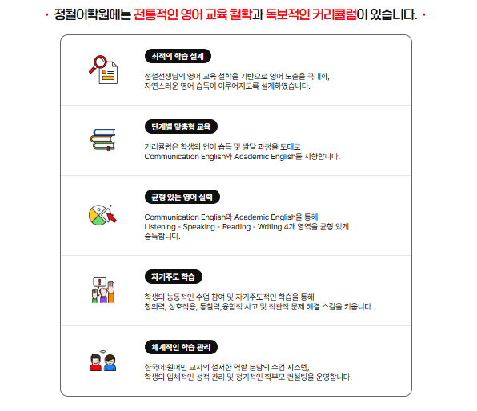

2007년에 문을 연 더크는킨더는 아이들이 세상을 살아가는 힘을 스스로 키워가도록 돕는 역량 중심 교육기관입니다.
0~2세 아이들은 매일의 따뜻한 품과 안정된 일상 속에서 조금씩 자라며 세상을 배워갑니다. 사랑받는 경험을 통해 자신을 믿는 법을 배우고, 그 마음이 3세 이후 누리과정으로 자연스럽게 이어질 수 있도록, 아이의 하루를 정성으로 채워갑니다.
3~5세를 위한 더크는 교육은 절충형 융합교육과정으로 이루어져 있습니다. 아이들이 놀이 속에서 배우고, 배움 속에서 즐거움을 느끼며 바른 인성과 자신감을 바탕으로 자아를 확립하며, 스스로 생각하고 탐구하는 힘을 기르도록 합니다.
언어를 통한 표현력, 친구와의 소통, 창의적 탐구활동까지 — 모든 순간이 아이의 가능성을 확장하는 배움의 과정입니다. 아이들이 “할 수 있다”는 자신감을 느끼며, 즐겁게 배우는 경험이 곧 미래를 살아가는 힘이 되도록 함께합니다.
더크는킨더는 앞으로도 아이 한 명 한 명의 마음에 귀 기울이며, 유아중심 놀이학습과 초등연계 교육과정으로 아이들이 행복하게 배우고 단단하게 자라나는 성장을 함께 만들어가겠습니다.
정철 선생님은 50년 넘게 영어교육에 헌신하며 수많은 아이들에게 ‘영어로 세상을 바라보는 힘’을 선물하셨습니다. 1990년, 강남역 작은 교실에서 시작된 정철어학원은 이제 전국으로 뻗어나간 대한민국 영어교육의 시작점이 되었습니다.
부모님들의 간절한 바람 속에서 1995년 탄생한 대한민국 어린이 영어학원 프랜차이즈 1호, 정철어학원은 영어를 단순히 배우는 공간이 아니라 아이들이 영어로 생각하고, 소통하며, 자신을 표현하는 혁신적인 공간이 되었습니다.
정철 선생님이 직접 만든 교재와 독창적인 교수법은 한국 영어교육의 새로운 길을 열었고, 아이들이 자신감 있게 영어를 즐길 수 있는 토대를 마련했습니다.
오늘날 정철어학원은 듣기, 말하기, 읽기, 쓰기 — 이 네 가지 핵심 영어 역량에 인성과 영성을 더한 정철어학원만의 프리미엄 영어교육으로 아이들의 내일을 준비하고 있습니다.
세상에 수많은 어학원이 있지만, 아이의 마음과 가능성에 빛을 비추는 곳 — 그곳이 바로 정철어학원입니다. 정철어학원은 오늘도, 아이 한 명 한 명의 내일을 환하게 밝혀주기 위해 변함없이 걸어갑니다.

